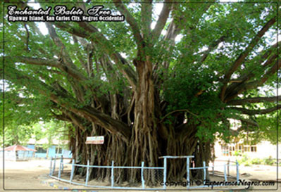
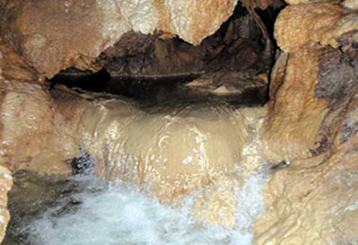

REGION VII : Central Visayas
Siquijor
Top Things to do
Siquijor is one of the places in the Philippines that is just enveloped in mystery, yet one that is
so blessed with natural beauty. It is a place where healers are very much heard of. In fact, the island
is so associated with mystic traditions that the tourism industry in the island capitalizes on that fact.
St. Francis de Assisi Church
The first thing you notice once you get out of the Siquijor Pier is the old stone church of St. Francis de Assisi.
It just looms over the town plaza. Fronting the church is the belltower that in the past served as a watch tower to warn residents from sea raiders.
The construction of the church started In 1793 and was completed in 1831. It is a structure built during the colonial
times in the Philippines, and just like the other structures built during this period, it was mostly made of coral stone.
Capilay Spring Park
This is an emerald green pool that serves as a public pool in Siquijor. It was just a simple spring lake that was developed into a pool. Here,
you can go for a swim or have a picnic if you just want to relax. Even better, there are fish that thrive in the pool which makes it a really interesting swim.
Cambugahay Falls
Before you reach the falls, you have to take a couple of steps down. The waterfalls is just very serene. It is surrounded by lush vegetation. The water that greets
you is a shade of turquoise. However, when you visit there after having rained the previous day, don’t be surprised of the water is moss green. The falls are multi-level cascades.
If you really want to make the most of your time in Cambugahay Falls, try out the swing rope that hangs from the tree. What do you do with it? You do a Tarzan jump!
Mt. Bandilaan National Park
Cebu
If you’re a lover of nature and outdoor-related activities, you will love the Mt. Bandilaan National Park. It’s nature at its best. The forest is filled with towering trees
and anahaw – which is the national leaf of the Philippines. The best activity for the place is trekking. Get all the way to the top for a truly incredible experience.
Lazi Convent and San Isidro Labrador Church
The church complex of San Isidro Labrador is comprised of the church and the convent. Like most of thestructures in the country, this one was constructed during colonial times.
It was built by the Augustinian Recollects in the latter half of the 19th century. And just like the structures of old, coral stone was used in its construction.
The convent is located right across the church. It was used as a place where the friars could rest and relax. It is a structure that is U-shaped.
Salagdoong Beach
Although it has undergone some development, Salagdoong Beach has retained its natural charm. The key for it retaining its natural beauty is the gorgeous combination of cobalt,
turquoise and green waters.
There are cottages that you can rent. Slides are built on the rock formations too. If you’re a bit adventurous, you can head up the cliff and go for a jump.
Sta. Maria Church
The Sta. Maria Church is the home of a structure called the Black Maria, which is an Italian lady saint. It is a popular because it is an icon that is eerie-looking. The icon,
Santa Rita de Cascia, is a patroness of all hardship.The icon is dressed in black and carries a human skull in one hand and a cross on another.

The Old Balete Tree
This is a really spooky-looking old tree. It is tied with the mysticism that surrounds Siquijor. You can head to this place and soak your feet in a pool of water and let fish
nibble on your skin.
Mangrove Forests
Siquijor is filled with mangrove forests, most especially in the town of Maria. You can head over to the Guiwanon Spring Park and just hang out in the tree houses.
This is a place where you can really experience fresh air and scenic views.

Cantabon Cave
It takes around 1.5 hours to walk through the cave. You need to register in the town if you want to explore the cave. You are also required to hire a guide,
but it’s not hard to find one because they hang around the cave.